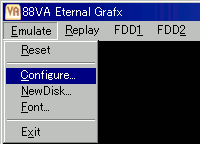
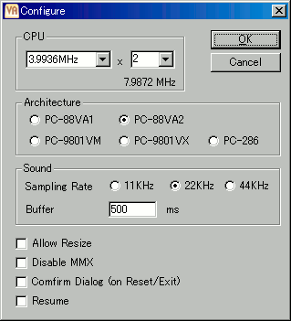

[Emulate - Configure...]を選択し 設定ダイアログを表示します。

エミュレーションするマシンとCPUを設定します。
VA
通常は、[CPU]に3.9936MHz x 2を設定します。
98
PentiumII以下のマシンでは処理落ちするケースが多いのでクロック数を下げてください。Celeron以降のマシンにおいても、アプリケーションにより処理落ちしたり フレームスキップが発生して充分にエミュレートできない場合があります。その場合は、CPU動作設定のクロック数を下げてください。
続いてサウンド設定を行います。
マシンパワーがあれば 44KHzへ変更すると良いでしょう。
Bufferの値は 処理が追い付く最低の値を設定します。値を小さくするほど、サウンドが再生されるまでの遅延を小さくすることができます。
環境によりますが、速いマシンであれば 200ms〜300ms, 通常で 500msくらいが目安です。
98Resumeをチェックしておくと、PC-98NOTEのようにレジュームが働くようになります。好みによりチェックして下さい。
設定変更後は[Emulate - Reset]でリセットしてください。